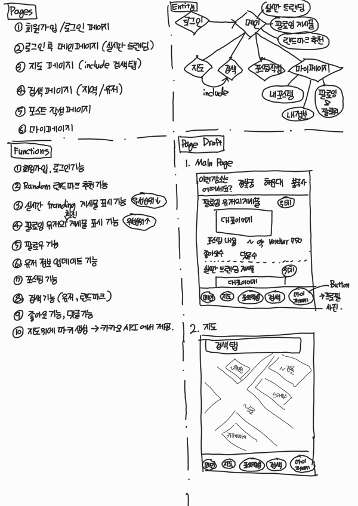

개발을 하다 보면, API 라는 단어를 적어도 한번 혹은 정말 질리도록 마주칠 것이다. 그런데 이 단어를 처음 접해서 인터넷에 검색을 해보면 당황을 하는 사람이 더러 있을 것이다.
Application Programming Interface, 줄여서 ==API는 다양한 소프트웨어나 애플리케이션 간의 상호작용을 가능하게 해주는 인터페이스==라고 설명이 되어 있는데 이렇게 설명만 듣고 보면 무슨 말인지 감이 잘 안올 것이다. 나도 최근에 공모전 등의 협업 프로젝트를 진행하면서 같은 SW학부생인데도 불구하고 API라는 것이 어렵고, 또 잘 와닿지 못해 하는 친구들을 더러 봤다.
API라는 단어가 주는 압박감, 이해하기 힘든 의미 때문에 API가 어렵게 느껴질 수 있지만 이 것은 정말로 어렵게 생각할 것이 전혀 아니다.
API를 예시를 들어 설명하자면 다음과 같다.
여러분 앞에 데스크톱 본체가 있다고 하자. 이 데스크톱을 모니터에 연결해서 컴퓨터 화면을 볼 수 있고, 또 유선키보드나 유선 마우스를 연결해서 인터넷 검색을 하거나 유튜브를 볼 수 있다.
우리는 유선 마우스를 주문해서 마우스 클릭질을 하면서 유튜브를 보고 싶다. 노트북이라면 따로 마우스를 구매하지 않아도 되었겠지만 데스크톱 본체만 달랑 있다면 우리는 아무것도 할 수 없기에 마우스를 구매하기로 했다. 얼마 후, 마우스가 배송이 되어서 왔고 드디어 우리는 컴퓨터 화면에서 클릭을 하면서 유튜브 동영상을 볼 수 있게 되었다.
그런데 가만히 생각해보면 데스크톱 본체와 마우스는 제조사가 다르다. 그럼에도 불구하고 우리는 이들을 문제없이 연결해서 쓸 수 있다. 우리가 유선 마우스를 택배로 받았을 때, 데스크톱 본체와 다른 제조사에서 다른 날짜에 배송된 물건을 받았음에도 유선마우스를 연결할 수 있는 동일한 USB 포트가 데스크톱에 포함되어 있어 컴퓨터에 연결해서 마우스 클릭 액션을 할 수 있다. 이게 어떻게 가능할까?
이 것은 데스크톱 본체와 마우스를 만드는 회사가 같은 포트 '규격'을 보고 제품을 만들었기 때문이다. USB라는 표준 규격을 참고하여 두 회사가 제품을 만들었기 때문에 마우스와 데스크톱 본체를 문제 없이 연결을 할 수 있고 마우스 클릭, 휠 스크롤 등의 동작의 결과를 컴퓨터 화면에서 볼 수 있는 것이다. 만약 마우스 회사가 자기들만의 독자적인 포트 규격을 사용해서 제품을 만들었다고 하면 그 마우스는 우리 집에 있는 데스크톱과 연결할 수 없을 것이다.
이 예시 중 API의 의미에 대해서 우리가 주목을 해야햐는 부분은 'USB 포트'이다. 컴퓨터 없이 마우스만 달랑 있다고 해서 우리가 아무리 클릭을 한다 한들, 유튜브 화면을 띄워서 동영상을 클릭할 수 없을 것이고 데스크톱 본체만 달랑 있다고 해서 우리가 아무리 보고 싶은 동영상이 있어도 클릭해서 그 영상의 내용을 볼 수 없다. 컴퓨터와 마우스를 연결해서 우리가 '클릭' 이라는 마우스 액션을 데스크톱 본체로 전달을 해주는 것이 이 'USB 포트'라고 생각할 수 있다. 즉, USB 포트는 컴퓨터와 마우스가 상호작용을 할 수 있도록 해주는 일종의 징검다리 역할을 해주는 것이다. 컴퓨터를 맨 처음 발명한 회사는 이 징검다리를 USB라는 '규격'으로 설명해놨기에 이 행동이 가능한 것이다.
API도 USB 포트의 역할과 동일하다. 다양한 애플리케이션, 서비스, 시스템들이 서로 상호작용을 할 수 있도록 통신할 수 있는 징검다리 역할을 해주는 것이 API 다. 방금전 예시로 들었던 USB 규격의 설명 처럼 이 API라는 것을 개발자가 써먹을 수 있게 설명을 해놓은 설명서가 API 문서이다.
API 문서는 어떤 프로그램이나 앱이 아니라 말 그대로 글로 적혀 있는 메뉴얼이다. 어떤 소프트웨어 제품을 개발하려고 할 때, 개발자는 이 API 문서를 오랫동안 들여다보면서 서로 다른 분야에 있는 개발자라고 하더라도 하나하나 다 물어보면서 서로를 귀찮게하거나 내가 알고 있는 분야가 아닌 처음 보는 분야를 공부하는 등의 비효율적인 작업 필요 없이 굉장히 효율적인 협업을 할 수 있다.
API 문서를 잘 작성하는 것은 API 서비스를 성공적으로 만드는 역할 뿐만 아니라 성공적인 협업으로의 결정적인 역할을 할 수 있다. Backend 개발의 경우에는 Backend 개발자가 서비스를 만듦과 동시에 API 문서를 작성하게 되는데, 기존에는 API 문서를 하나하나 손으로 작성해야했기에 비효율적이었고, 작성했다 하더라도 실제 API 서비스와 문서에 적혀있는 기능이 다른 경우가 많았다. 이를 해결하기 위해 따로 문서를 작성할 필요 없이 API 문서를 자동으로 만들어주는 라이브러리 및 규격들이 만들어졌다. 이번 포스팅에 소개할 Swagger가 그 중 하나이다.
프로젝트 팀장을 맡았고, 프로젝트 설계 및 개발 방법론 디자인, API document를 비롯한 문서화, 주요 Backend 기능 개발, CI/CD 아키텍처 구축을 맡았다.
Contribution info
개발 기간: 2023/06/13 ~ 2023/09/06
담당 역할: 팀장, Project Managing, Backend 개발, 문서화, CI/CD 구축, 아키텍처 설계 및 인프라 구축. 디자인 초안 작성
프로젝트 주제: 지역 랜드마크와 관련된 내 추억을 공유하는 지도 기반 웹 SNS 서비스
출품한 공모전: 제 11회 문화데이터 활용 경진대회, 2023년 공개SW 개발자대회
팀 규모: 4명
문화 빅데이터를 활용해서 서비스를 기획하거나 개발, 혹은 데이터 분석을 해서 출전을 하는 공모전이었다.
이 3개의 분야 중 제품*서비스 개발 분야에 출전하기로 결정했고, 바로 프로젝트에 대한 초안을 그려봤다.
자주 가는 카페에서 다음과 같은 표정으로 30분동안 앉아서 고민을 했고, 패드로 간단하게 UIUX 다이어그램도 그려봤다.
음... 뭐 만들지
그렇게 고민을 끝내고 프로젝트 초안을 다음과 같이 완성했다.

프로젝트 브레인스토밍 초안 및 UI/UX 다이어그램 일부
피그마 UI를 다룰줄 알고 디자인에 대한 기본 지식이 있었다면 이렇게 비효율적으로 손으로 삐뚤삐뚤하게 그린 다이어그램을 사용하지 않았을 거지만 내겐 그런 능력이 없었기에 이정도로 만족했다..
다만 이번 프로젝트를 끝내고 나서 피그마는 꼭 배워놔야겠다고 생각했다. 추후 얘기를 다시 한번 하겠지만 팀에 디자이너가 없었기에 깔끔한 UI를 뽑기가 너무 어려웠다. 프로젝트를 진행하면서 차라리 내가 이걸 할 줄 알았다면 결과물이 엄청 달랐을텐데... 하는 아쉬움이 너무 컸다.
여튼 아이디어 초고를 간단하게 정리하고 나니 이 프로젝트는 혼자서 모든 것을 개발하기에는 많이 어려울 것 같아서 같이 공모전을 나갈 팀원을 구했다. 기존에 아이디어톤 같은 공모전을 나간 경험이 있는 동기들과 팀을 꾸렸고, 팀장인 내가 팀원들의 개발 분야를 나눴다.
총 4명으로 구성된 팀에서 나를 포함한 2명은 Backend 개발을, 나머지 2명은 디자인 및 Frontend 개발을 맡았고, 추가로 나는 프로젝트 스프린트 구성, 아키텍처 설계 및 구현, 문서화를 맡았다.
친구와 채팅으로 대화를 할 때, 중요 문서를 작성을 할 때 등등 우리는 글을 쓰면서 가끔씩 내가 쓰는 단어가 제대로 된 맞춤법을 지킨건가? 싶을 때가 있다.
이때 가장 좋은 확인 방법은 인터넷에 검색을 해보거나 사전에 검색을 해보거나 아니면 문법잘알 누군가에게 물어보는 것이 적절하다.
그러나 이렇게 일일이 모르는 단어가 생길때마다 검색해보는 것은 여간 귀찮은 일이 아닐 수 없다.
그래서 요즘 타이핑 도구들(한컴의 한글, 구글 Word 등)에서는 자동으로 맞춤법을 교정해주는 기능이 탑재되어 있고 문서 도구들이 나날이 발전해나가면서 그 기능 또한 점점 좋아지고 있다.
프로그래밍 또한 수많은 타이핑이 들어가는 작업이다. 코딩을 할 때에도 변수 이름을 정하거나, 이 코드를 읽는 누군가가 내가 쓴 코드를 더 잘 이해할 수 있게 주석을 달아주는 등 기계가 아닌 사람이 읽을 수 있는 글을 쓰는 때가 많다. 프로젝트 규모가 커질수록 human-readable을 위한 글을 쓰는 시간과 그 규모가 덩달아 커진다.
그러나 코딩을 하는 사람들은 개발자이지 국립국어원이나 국제 언어 문법 관련 직종에 종사하는 사람들이 아니기 때문에 종종 문법 관련 실수를 저지르곤 한다.
그런데 그 많은 단어들의 오탈자를 하나하나 확인하는 것은 모래사장에 바늘찾기만큼 어려운 작업이다. 때문에 똑똑한 형님들이 다른 문서 작업 툴에 있는 문법 교정 도구처럼 코드에서도 문법 관련 오류를 찾아 report해주는 라이브러리를 만들었다.